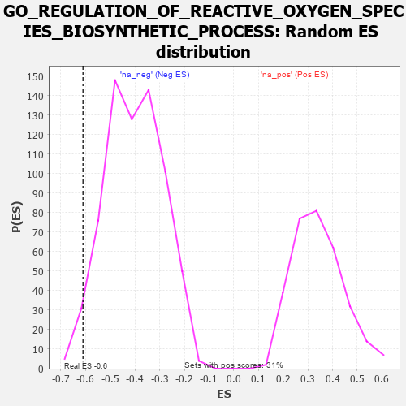

| | | Dataset | 7d |
| Phenotype | NoPhenotypeAvailable |
| Upregulated in class | na_neg |
| GeneSet | GO_REGULATION_OF_REACTIVE_OXYGEN_SPECIES_BIOSYNTHETIC_PROCESS |
| Enrichment Score (ES) | -0.6093691 |
| Normalized Enrichment Score (NES) | -1.5148306 |
| Nominal p-value | 0.02478134 |
| FDR q-value | 0.1791039 |
| FWER p-Value | 1.0 |
Table: GSEA Results Summary
 Fig 1: Enrichment plot: GO_REGULATION_OF_REACTIVE_OXYGEN_SPECIES_BIOSYNTHETIC_PROCESS
Fig 1: Enrichment plot: GO_REGULATION_OF_REACTIVE_OXYGEN_SPECIES_BIOSYNTHETIC_PROCESS
Profile of the Running ES Score & Positions of GeneSet Members on the Rank Ordered List
| PROBE | GENE SYMBOL | GENE_TITLE | RANK IN GENE LIST | RANK METRIC SCORE | RUNNING ES | CORE ENRICHMENT | | 1 | AKT1 | | | 1040 | 0.476 | -0.0908 | No |
| 2 | TRAP1 | | | 2219 | 0.274 | -0.2160 | No |
| 3 | SMAD3 | | | 3303 | 0.105 | -0.3434 | No |
| 4 | ABCD1 | | | 3677 | 0.047 | -0.3863 | No |
| 5 | DDAH1 | | | 4056 | -0.016 | -0.4325 | No |
| 6 | MTOR | | | 4114 | -0.025 | -0.4376 | No |
| 7 | P2RX4 | | | 4813 | -0.161 | -0.5118 | No |
| 8 | CLU | | | 4889 | -0.174 | -0.5066 | No |
| 9 | KLF4 | | | 5005 | -0.198 | -0.5044 | No |
| 10 | GRIN1 | | | 5381 | -0.291 | -0.5271 | No |
| 11 | RAC1 | | | 6036 | -0.484 | -0.5687 | Yes |
| 12 | KLF2 | | | 6182 | -0.532 | -0.5423 | Yes |
| 13 | INSR | | | 6204 | -0.538 | -0.4998 | Yes |
| 14 | RGN | | | 6233 | -0.547 | -0.4574 | Yes |
| 15 | CTNS | | | 7044 | -0.965 | -0.4782 | Yes |
| 16 | TSPO | | | 7194 | -1.065 | -0.4075 | Yes |
| 17 | WDR35 | | | 7357 | -1.225 | -0.3251 | Yes |
| 18 | PKD2 | | | 7822 | -2.167 | -0.2015 | Yes |
| 19 | FYN | | | 7881 | -2.622 | 0.0113 | Yes |
Table: GSEA details [plain text format]

Fig 2: GO_REGULATION_OF_REACTIVE_OXYGEN_SPECIES_BIOSYNTHETIC_PROCESS: Random ES distribution
Gene set null distribution of ES for GO_REGULATION_OF_REACTIVE_OXYGEN_SPECIES_BIOSYNTHETIC_PROCESS